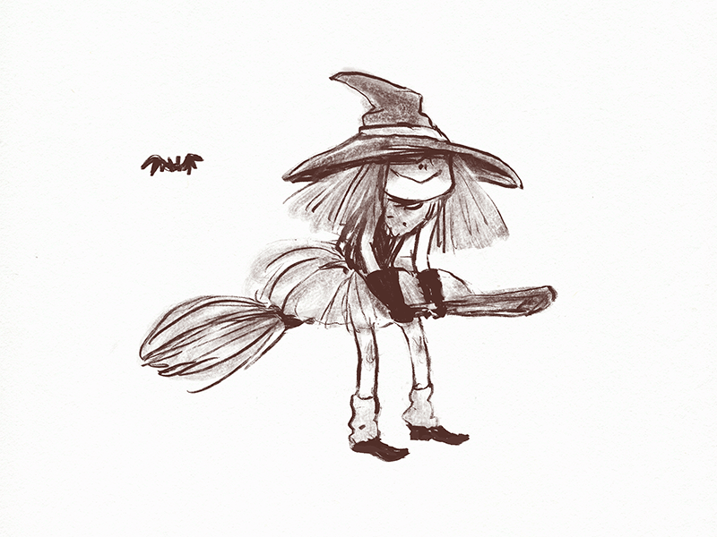
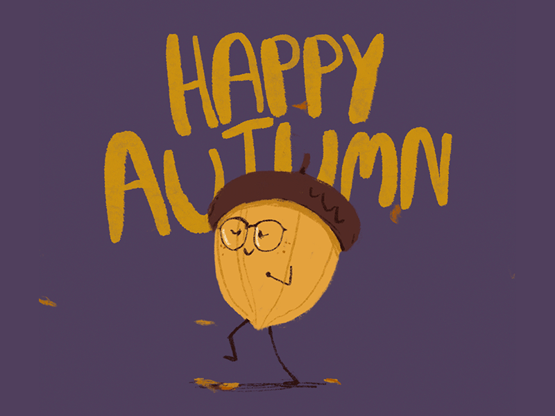
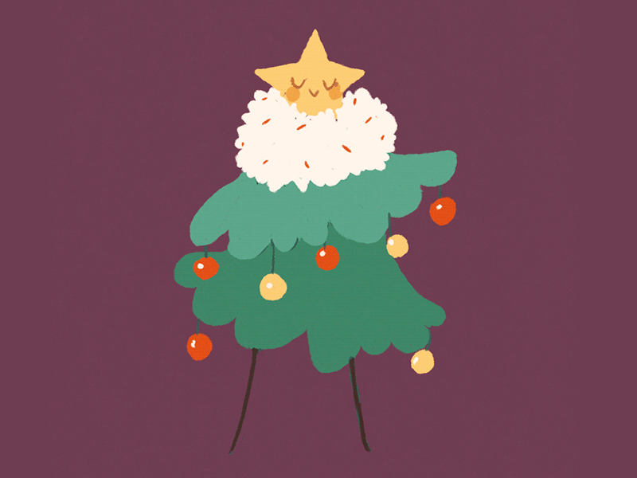
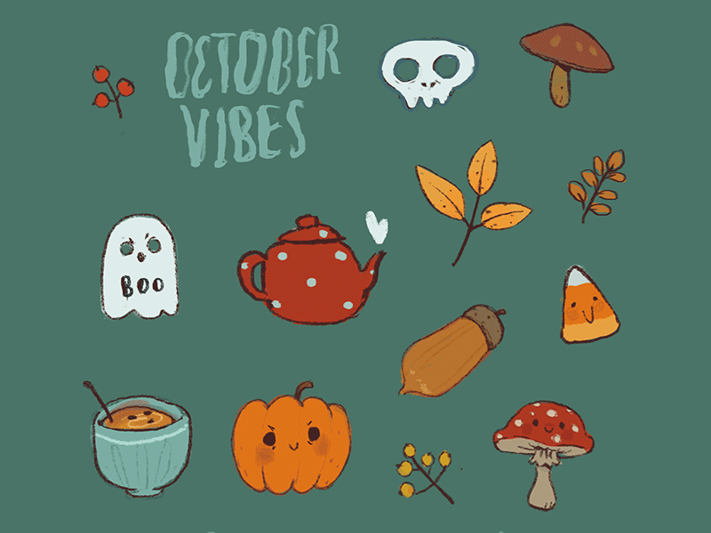
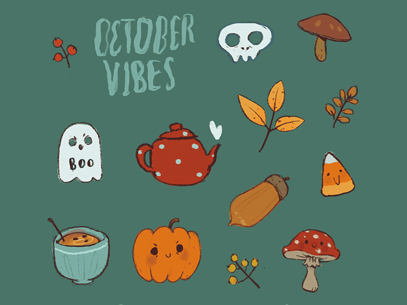

My gif series
The inspiration
For my gif series I took inspiration from an artist named Marianna Raskin. Here are some of her works.
   


The images source and more about the artist follow the link
dribbleMy gifs
The gif series centers the young witch in her every day events, with her magic she tries to do multiple tasks, similarly with me thinking about my multiple things that have to be done.
Witch on the broom
Witch reading

Witch pets her cat
Evening witch